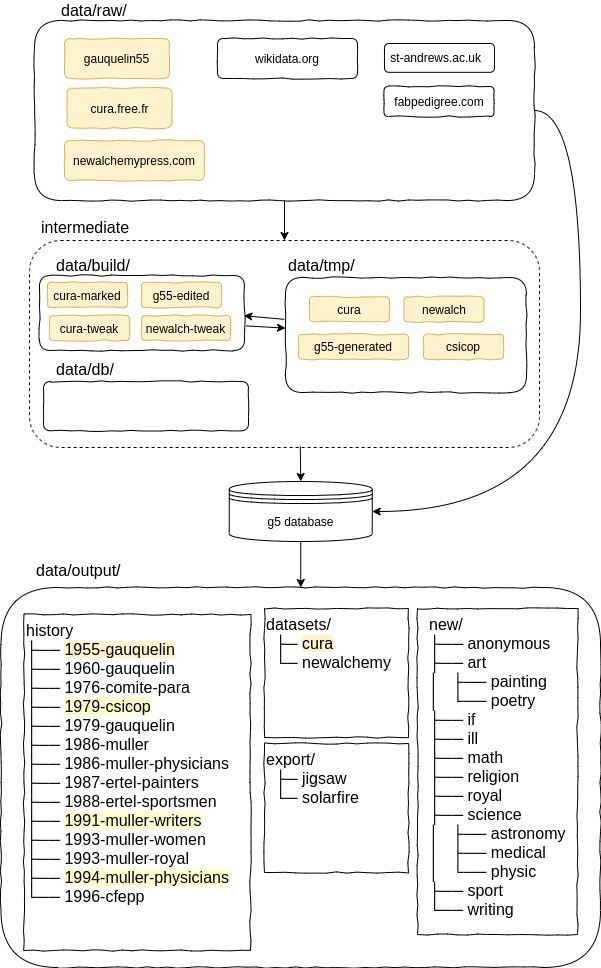

data/ directory may evolve.
Zones with a yellow background represent existing directories in the current state of the code. 
Wikidata integration
In order to link Gauquelin and related data with the semantic web, the purpose is to associate to each record its corresponding wikidata id.Writing code that guarantees that it does not introduce wrong matching is not easy because orthograph in names may vary and there can be errors on birth dates.